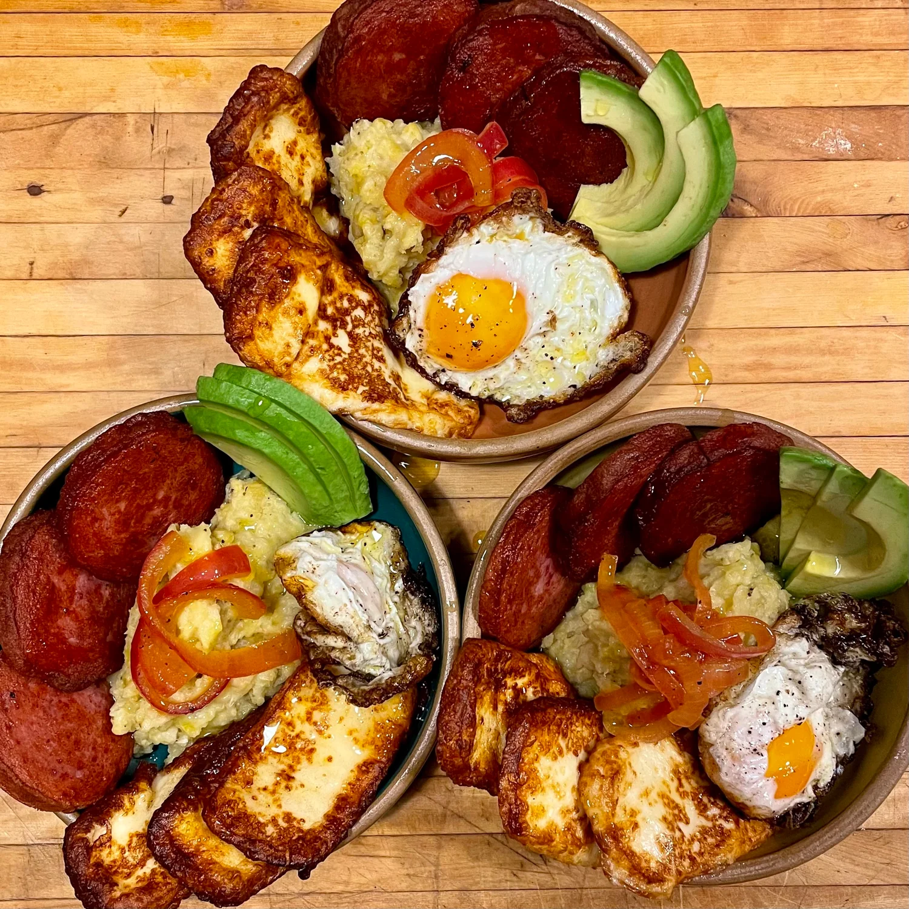

DOMINICAN BREAKFAST OF LOS TRES GOLPES CON MANGÚ

An iconic Dominican breakfast, the very popular Mangú con Los Tres Golpes is one of the best representations of our gastronomy. A day can only start well and get better when started with one of our most loved breakfast meals. Let me show you just easy it is to make this.
General Information:
PREP TIME:
15 mins
COOK TIME:
20 mins
TOTAL TIME:
35 mins
COURSE:
Breakfast
CUISINE:
Dominican
SERVINGS:
6 servings
CALORIES:
978 kcal
Ingredients:
To make the plantains
- 4 plantain (green, unripe), peel and chop them
- 1 ½ teaspoon salt
- 4 teaspoon olive oil, or butter
- 1 cup water, at room temperature
- 2 tablespoon olive oil
Red onions with vinegar
- 4 tablespoons olive oil
- 2 large red onion, sliced thinly
- 2 tablespoons apple cider vinegar
- 1 teaspoon salt, (or more, to taste)
Eggs
- 12 egg (medium)
- 1 cup oil for frying, will also be used for frying the salami and cheese
Cheese
- 1 pound queso de freir, (or plain halloumi)
Salami
- 1 pound Dominican-style salami, cut into thin slices
Instructions:
- Peel and boil the plantains in a large pot. Mash them with a fork or potato masher in a large bowl.
- Sauté the onions over low heat and add vinegar salt and pepper.
- Fry the cheese until it's golden brown and crispy.
- Heat oil over medium heat in a non-stick frying pan. Fry the eggs sunny-side-up one by one.
- Fry the salami in the oil heated at medium-high heat, flipping mid-way until it's browned on both sides. Remove from the oil and let it rest on a paper towel to absorb excess oil.